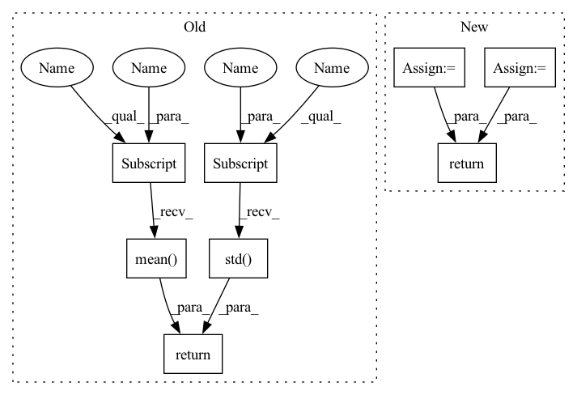

Pattern ID :40109
Before Change
def _compute_normalization(df: DataFrame, num_cols: List) -> Tuple:
return df[num_cols].mean() .to_dict(), df[num_cols].std() .to_dict()
def _normalize(df: DataFrame, num_cols: List, mean: Dict, std: Dict) -> DataFrame:After Change
def _compute_normalization(df: DataFrame, num_cols: List) -> Tuple:
df_mean = {c: np.nanmean(df[c], dtype=float) for c in num_cols}
df_std = {c: np.nanstd(df[c], dtype=float) for c in num_cols}
zero_std = [c for c in num_cols if df_std[c] == 0]
if zero_std:
logging.warning(
f"Following numerical columns {zero_std} have zero STD which may lead to NaN in normalized dataset."
)
return df_mean, df_std
def _normalize(df: DataFrame, num_cols: List, mean: Dict, std: Dict) -> DataFrame:In pattern: SUPERPATTERN
Frequency: 3
Non-data size: 8
Instances Fragment ID: 113953854
Project Name: pytorchlightning/lightning-flash
Commit Name: 9dc970c2dd401813f17f797d346a867a42806556
Time: 2022-07-26
Author: Borda@users.noreply.github.com
File Name: flash/tabular/classification/utils.py
M Class Name: AnonimousClass
N Class Name: AnonimousClass
M Method Name: _compute_normalization(2)
N Method Name: _compute_normalization(2)
M Parent Class:
N Parent Class:
M File Name: flash/tabular/classification/utils.py
N File Name: flash/tabular/classification/utils.py
M Start Line: 35
M End Line: 35
N Start Line: 36
N End Line: 43
Before Change
def _compute_normalization(df: DataFrame, num_cols: List) -> Tuple:
return df[num_cols].mean() .to_dict(), df[num_cols].std() .to_dict()
def _normalize(df: DataFrame, num_cols: List, mean: Dict, std: Dict) -> DataFrame:After Change
def _compute_normalization(df: DataFrame, num_cols: List) -> Tuple:
df_mean = {c: np.nanmean(df[c], dtype=float) for c in num_cols}
df_std = {c: np.nanstd(df[c], dtype=float) for c in num_cols}
zero_std = [c for c in num_cols if df_std[c] == 0]
if zero_std:
logging.warning(
f"Following numerical columns {zero_std} have zero STD which may lead to NaN in normalized dataset."
)
return df_mean, df_std
def _normalize(df: DataFrame, num_cols: List, mean: Dict, std: Dict) -> DataFrame: Fragment ID: 113953855
Project Name: lightning-ai/lightning-flash
Commit Name: 9dc970c2dd401813f17f797d346a867a42806556
Time: 2022-07-26
Author: Borda@users.noreply.github.com
File Name: flash/tabular/classification/utils.py
M Class Name: AnonimousClass
N Class Name: AnonimousClass
M Method Name: _compute_normalization(2)
N Method Name: _compute_normalization(2)
M Parent Class:
N Parent Class:
M File Name: flash/tabular/classification/utils.py
N File Name: flash/tabular/classification/utils.py
M Start Line: 35
M End Line: 35
N Start Line: 36
N End Line: 43
Before Change
@annotate("Moments_op", color="green", domain="nvt_python")
def stat_logic(self, ddf, columns_ctx, input_cols, target_cols):
cols = self.get_columns(columns_ctx, input_cols, target_cols)
dask_stats = {}
dask_stats["count"] = ddf[cols].count()
dask_stats["mean"] = ddf[cols].mean()
dask_stats["std"] = ddf[cols].std()
return dask_stats
@annotate("Moments_finalize", color="green", domain="nvt_python")
def finalize(self, dask_stats):After Change
@annotate("Moments_op", color="green", domain="nvt_python")
def stat_logic(self, ddf, columns_ctx, input_cols, target_cols):
cols = self.get_columns(columns_ctx, input_cols, target_cols)
return _custom_moments(ddf[cols])
@annotate("Moments_finalize", color="green", domain="nvt_python")
def finalize(self, dask_stats): Fragment ID: 113953859
Project Name: nvidia/nvtabular
Commit Name: f39e65e95d0af1d44ae9c2073a06c5a442d4de93
Time: 2020-10-28
Author: rzamora217@gmail.com
File Name: nvtabular/ops/moments.py
M Class Name: Moments
N Class Name: Moments
M Method Name: stat_logic(5)
N Method Name: stat_logic(5)
M Parent Class: StatOperator
N Parent Class: StatOperator
M File Name: nvtabular/ops/moments.py
N File Name: nvtabular/ops/moments.py
M Start Line: 44
M End Line: 49
N Start Line: 54
N End Line: 54